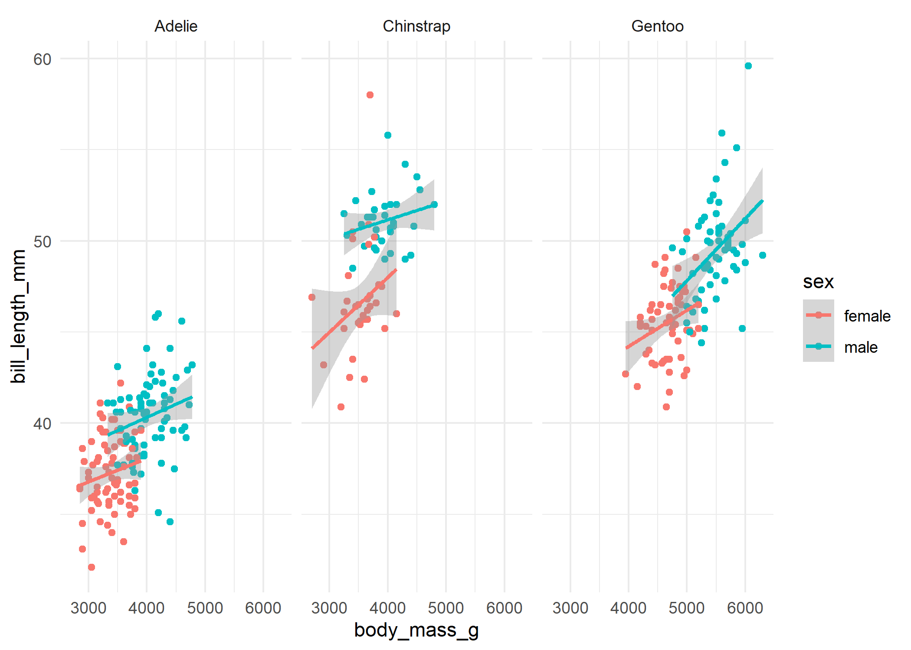

The goal of ggreveal is to …
Usage
Create a ggplot as you would usually do.
library(palmerpenguins)
library(ggplot2)
p <- ggplot(penguins[!is.na(penguins$sex),],
aes(body_mass_g, bill_length_mm,
group=sex, color=sex)) +
geom_point() +
geom_smooth(method="lm", formula = 'y ~ x', linewidth=1) +
facet_wrap(~species) +
theme_minimal()
p
Then use one of reveal_by_facet, reveal_by_group or reveal_by_layer to obtain a list of plots that show elements incrementally.
library(ggreveal)
reveal_by_group(p)
#> [[1]]